home
some notes on five elements
by Tuomas Laitinen
When inhabiting the blind spots of broadband cellular networks, one can have a more direct and vivid experience of the circulation of natural elements. As conference calls were our means of reaching each other, but a challenge in the Finnish archipelago, the video format served to express these experiences of patching the sky with 5 colored stones in the local natural environment.